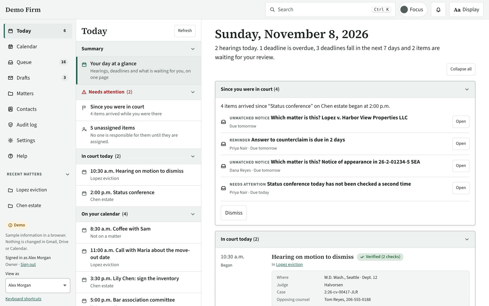
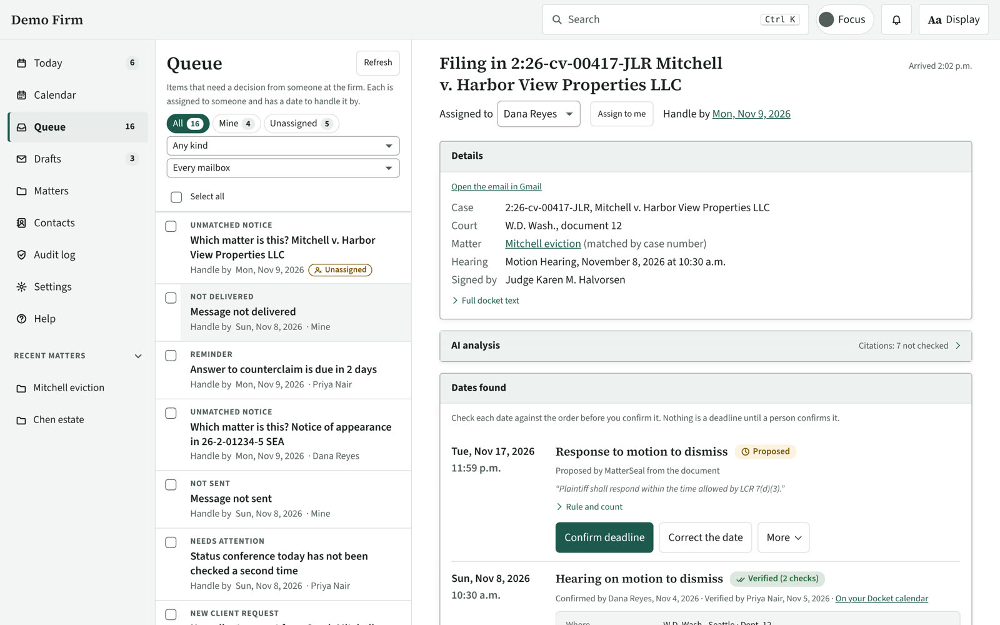
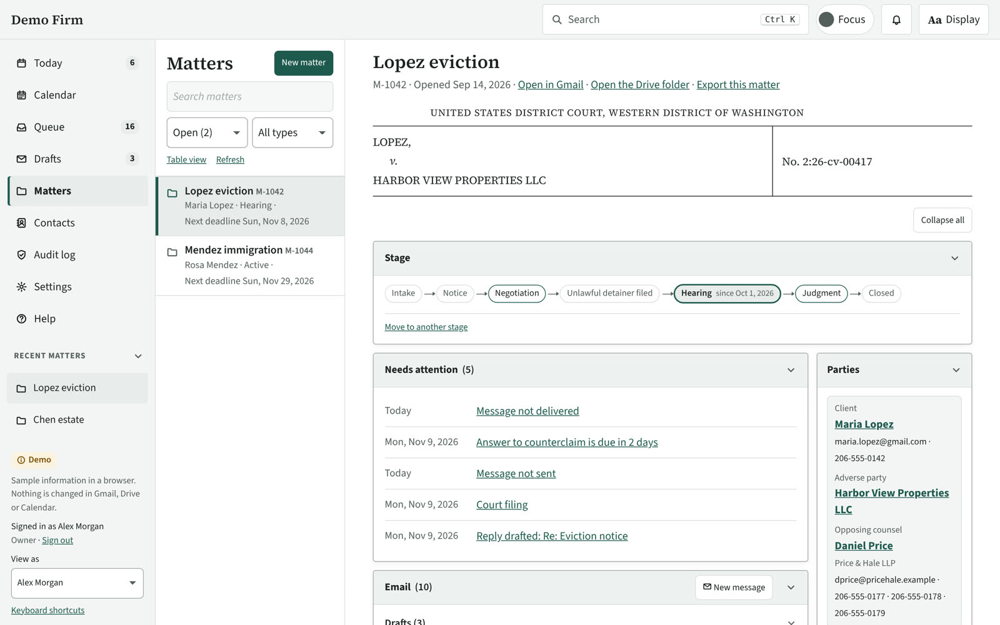
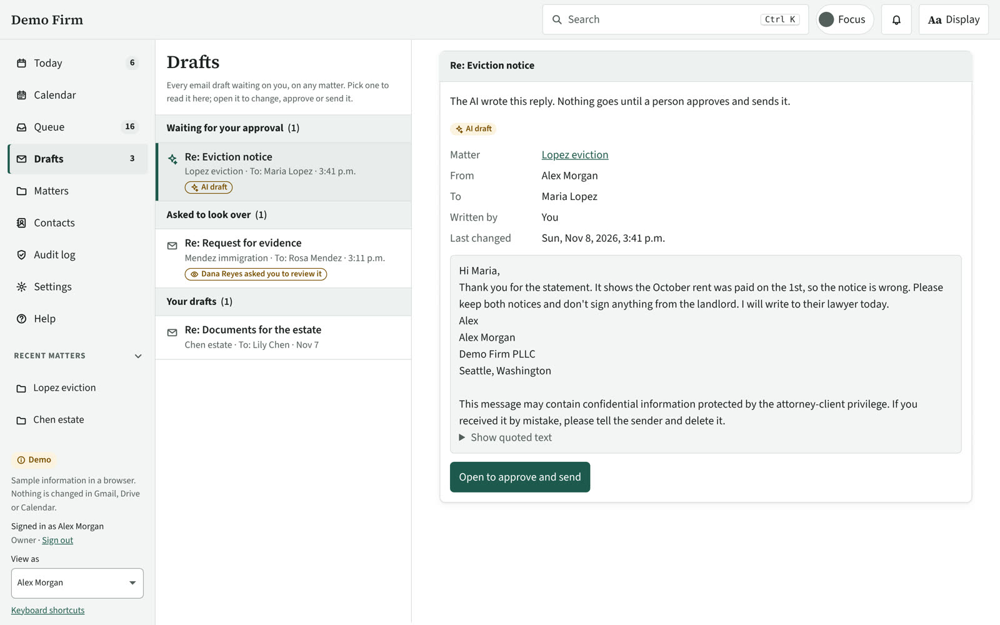

Pangur Labs
We build MatterSeal: case management for small law firms that run on Google Workspace.
Pangur Labs LLC is a software company in Seattle, Washington. Our product, MatterSeal, takes the email, calendar and documents a small law firm already keeps in Google Workspace and organizes them into matters (a law firm's word for a case or client project). It reads court notices, works out the deadlines that follow from court rules, and has a person at the firm confirm each one. MatterSeal is sold as a monthly subscription and runs on Google Cloud.
See it working
A short tour of MatterSeal, recorded in the app with made-up sample data. There is no sound.








The problem
Most solo lawyers and small firms run their practice out of Gmail, Google Calendar and Google Drive. A case's emails, hearings, filings and deadlines are scattered across those three places, and a missed court deadline can cost a client their case. Practice management software exists, but it usually means moving everything into a separate system, and many small firms don't use any.
What MatterSeal does
- Files each incoming email to the right matter, and adds a Gmail label so Gmail shows the same filing.
- Reads court notices and proposes the deadlines that follow from court rules, for state and federal courts in Washington, Oregon and California so far. Each deadline stays proposed until a person confirms it.
- Shows each matter's email, calendar events, Google Drive documents, contacts and deadlines on one page.
- Uses AI, with the firm's permission for each matter, to summarize court filings and draft replies for a lawyer to edit and approve. AI never sends email.
- Shows what AI will cost before a document goes to it, lets the firm set a monthly AI budget, and shows what AI has cost by day and month.
- Lists the citations in a filing for a lawyer to open and mark as checked. The citations are found by MatterSeal itself, not by AI.
- Protects against ransomware: encrypted, locked backups that can't be changed or deleted until they age out, an alarm when many documents change at once, and optional protected copies of every matter document.
- Runs conflict checks, and gives each person at the firm a work queue and a Today list.
- Gives clients a secure portal to message the firm and share documents.
- Keeps an audit log of who did what, and tells the firm when someone outside a matter can open its documents.
- Under development: AI agents the firm connects to work alongside its staff, within limits the firm sets, and an AI supervision report that shows what AI and agents did on each matter and who reviewed it.
Who it's for
Sole practitioners and small law firms whose email is on Google Workspace.
How it's built
MatterSeal is built on Google Cloud. Each customer firm gets its own Google Cloud project, so one firm's records are kept apart from every other firm's.
- A server written in Go runs on Cloud Run in the firm's project, and keeps matter records in Firestore.
- It connects to the firm's Gmail, Google Calendar and Google Drive through Google's APIs, and learns of new mail through Pub/Sub. Scheduled work runs on Cloud Tasks and Cloud Scheduler.
- Backups are encrypted and written to Cloud Storage in the firm's project. Each backup key is protected by Cloud Key Management Service and by a recovery kit the firm keeps.
- Secrets such as the firm's AI keys are kept in Secret Manager.
- For AI, each firm picks Anthropic's Claude (directly or through Google Vertex AI), OpenAI, or Google Gemini.
- People use MatterSeal in a desktop app (built with Tauri) or in a web browser. AI assistants such as Claude can also connect to a firm's MatterSeal, with the firm's permission.
Business model
Firms pay a monthly subscription, in three plans:
- Solo: for one lawyer. Pangur Labs runs MatterSeal, and Google Cloud costs are included.
- Firm: a charge per firm plus a charge per user. Pangur Labs runs MatterSeal, and Google Cloud costs are included.
- Self-hosted: a charge per user, for firms that run MatterSeal in a Google Cloud project they own and pay Google directly.
On every plan, each firm pays its AI service directly.
Where we are
Pangur Labs was founded in September 2026. MatterSeal works today and is in testing before launch. To see a demo or hear when it launches, email hello@pangurlabs.com.
Company
Pangur Labs LLC is a Washington limited liability company. We aren't a law firm, and we don't give legal advice. MatterSeal helps a lawyer keep track of work; the lawyer stays responsible for every deadline and filing.
The name comes from "Pangur Bán," a ninth-century Irish poem about a scholar and his cat, each absorbed in their own work.
Contact
hello@pangurlabs.com
Pangur Labs LLC, Seattle, Washington, United States